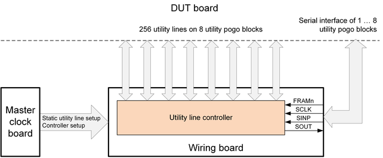

Sequencer-controlled utility lines
Utility lines may be controlled by the pattern sequencer via an internal data path or with the help of digital pins and a dedicated serial interface of the utility blocks. This type of controlling utility lines is referred to as "dynamic access" to utility lines. The advantage over the standard static access is that the utility lines can be controlled synchronously to the pattern sequencer.
On V93000 EXA Scale systems equipped with the Utility Card and running SmarTest 8, the pattern sequencer controls utility lines via an internal data path.
On V93000 Smart Scale and Pin Scale systems running SmarTest 7 or SmarTest 8, sequencer control of utility lines uses a dedicated serial interface of the utility pogo blocks. The serial interface is driven by digital pins that are connected on the DUT board. The same applies to V93000 EXA Scale systems equipped with the optional Utility Card and running SmarTest 7.
Supported system configurations
| Test head | DUT interface | Utility blocks | Utility lines | |
|---|---|---|---|---|
| V93000 EXA Scale systems1) | ||||
| LX | DUT Scale interface | 8 or 162) | 256 or 5122) | |
| SX | DUT Scale interface | |||
| CX | DUT Scale interface | |||
| V93000 Pin Scale and Smart Scale systems | ||||
| A-class (ATH) | Standard interface | 4 | 64 | |
| DUT Scale interface | 8 |
128 (2‑row block) or 256 (4‑row block) |
||
| Compact (CTH) | DUT Scale interface | |||
| Small (STH) | DUT Scale interface | |||
| Large (LTH) | Large DUT interface3) | |||
Serial interface
- V93000 Pin Scale and Smart Scale systems
The V93000 Pin Scale and Smart Scale systems mentioned above, provide a serial interface located on the active wiring board that allows controlling the utility lines via digital pins. The master clock board is used only for static setup of utility lines and for configuring the active wiring board for "dynamic access" to utility lines via the serial interface.

The graphics above shows 256 utility lines that are routed to four or eight utility pogo blocks. The pogo pins are URW00 … URW15 on 2‑row utility pogo blocks or URW00 … URW31 on 4‑row utility pogo blocks.
The connections on the right are the pins FRAMn, SCLK, SINP and (optionally for SmarTest 7) SOUT of the serial interface. These pins dynamically control the utility lines after the wiring board has been set up accordingly. The pins of the serial interface must be connected to digital pins on the DUT board. The serial interface must be wired for minimum one utility pogo block but an internal daisy-chain connection is also available to control more than one utility pogo block by one set of digital pins. For more information, refer to Ganging utility blocks.
- V93000 EXA Scale systems
On V93000 EXA Scale systems equipped with one or two optional Utility Cards (Variant EK051A), the functionality of the serial interface is provided by the Utility Card itself and is available for all eight utility pogo blocks of a card.
The serial interface if the Utility Card is used only for SmarTest 7. With SmarTest 8, internal data paths are used for sequencer control of utility lines. Digital pins connected to the interface pins are also accepted for SmarTest 8 although they are not used.
Galvanic separation
The ground pins of the utility pogo blocks (UGND) can be connected to digital ground planes (DGND) of the DUT board, however you may need to insert galvanic separation circuitry on the DUT board between the two ground domains. This is to prevent a negative impact on level accuracy and the introduction of noise into your measurements, due to ground loops. An example of such circuitry is provided in Galvanic separation between utility line serial interface and digital pins.
Galvanic separation may be required when using the serial interface of utility pogo blocks on V93000 Pin Scale, Smart Scale, and EXA Scale systems. This applies also to EXA Scale systems running SmarTest 8 if digital pins are connected to the serial interface.
Using the sequencer‑controlled utility lines
To make use of sequencer‑controlled utility lines you need to:
- V93000 EXA Scale systems running SmarTest 8:
-
- No additional connections are required on the DUT board. Serial interface pins FRAMn, SCLK and SINP provide no functionality but connections to digital pins are tolerated.
- The setup for the utility lines is similar to the setup defined in Controlling utility lines but the definition of the control lines by keyword utilityControl is not required.
- Use "utility actions" of the Utility Card to control utility lines during a measurement within an operating sequence.
- V93000 Smart Scale systems running SmarTest 8:
-
- Route three digital pins on the DUT board to the appropriate serial interface pins FRAMn, SCLK and SINP.
- Create a test setup for the serial pins: For more information, refer to Controlling utility lines.
- Use "utility actions" of the Wiring board to control utility lines during a measurement within an operating sequence.
- V93000 Pin Scale, Smart Scale, and EXA Scale systems running SmarTest 7:
-
- Route three (or optionally four) digital pins on the DUT board to the appropriate serial interface pins.
- Create a test setup for the serial pins using the Pin configuration tool , the Level setup tool , the Timing Setup Tool and the APIs UTILITY_SEQ_MODE and UTILITY_SEQ_STATIC_MASK.
- Use the Pattern Editor, SmartRDI class util(), or the SmartRDI Routing Tools to set up the required digital pattern for controlling utility lines via the serial interface.
For detailed information, refer to Setting up sequencer control of utility lines.
Functional changes
- Introduced in SmarTest 7.1.0
- SmarTest 7.2.0: External utility power introduced on ATH/CTH/STH DUT Scale and on LTH
- SmarTest 7.4.2: New mask mode, controlled by API UTILITY_SEQ_STATIC_MASK allows masking utility lines.
- SmarTest 8.3.4: Support of sequencer‑controlled utility lines on V93000 EXA Scale systems.
- SmarTest 7.10.1 / 8.3.5: Support of second Utility Card of V93000 EXA Scale systems.
- SmarTest 8.4.3: Support of LX test head of V93000 EXA Scale systems.